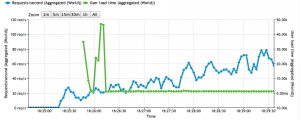
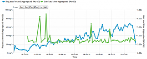
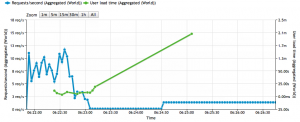

<?xml version="1.0" encoding="UTF-8"?>
<rss version="2.0"
	xmlns:content="http://purl.org/rss/1.0/modules/content/"
	xmlns:wfw="http://wellformedweb.org/CommentAPI/"
	xmlns:dc="http://purl.org/dc/elements/1.1/"
	xmlns:atom="http://www.w3.org/2005/Atom"
	xmlns:sy="http://purl.org/rss/1.0/modules/syndication/"
	xmlns:slash="http://purl.org/rss/1.0/modules/slash/"
	>

<channel>
	<title>Underflow &#187; server</title>
	<atom:link href="http://www.underflow.ca/blog/tag/server/feed" rel="self" type="application/rss+xml" />
	<link>http://www.underflow.ca/blog</link>
	<description>Thoughts, Ideas, Articles, and Essays by Jacob Groundwater</description>
	<lastBuildDate>Wed, 25 Apr 2012 07:12:26 +0000</lastBuildDate>
	<language>en-US</language>
	<sy:updatePeriod>hourly</sy:updatePeriod>
	<sy:updateFrequency>1</sy:updateFrequency>
	<generator>http://wordpress.org/?v=3.4.1</generator>
	<div style="color: #C09853;background-color: #FCF8E3;border: 1px solid #FBEED5;padding: 8px 35px 8px 14px;margin-bottom: 18px;-webkit-border-radius: 4px;-moz-border-radius: 4px;border-radius: 4px;">This site has been archived, for my current blog please go <a href=../../../../index.html>here</a>.</div>	<item>
		<title>Server Load Testing</title>
		<link>http://www.underflow.ca/blog/947/server-load-testing?utm_source=rss&#038;utm_medium=rss&#038;utm_campaign=server-load-testing</link>
		<comments>http://www.underflow.ca/blog/947/server-load-testing#comments</comments>
		<pubDate>Wed, 18 Apr 2012 08:00:14 +0000</pubDate>
		<dc:creator>jacob</dc:creator>
				<category><![CDATA[Note]]></category>
		<category><![CDATA[apache]]></category>
		<category><![CDATA[cloud flare]]></category>
		<category><![CDATA[mysql]]></category>
		<category><![CDATA[nginx]]></category>
		<category><![CDATA[performance]]></category>
		<category><![CDATA[php]]></category>
		<category><![CDATA[server]]></category>
		<category><![CDATA[Ubuntu]]></category>

		<guid isPermaLink="false">http://www.underflow.ca/blog/?p=947</guid>
		<description><![CDATA[I decided to perform a rough load test on my blog today. I am running the smallest cloud server from RackSpace: 256MB RAM 10GB Disk $0.015/hr. My server configuration is: Ubuntu 11.10 Apache/2.2.20 nginx/1.0.5 WordPress 3.3.1 MySQL 5.1.58 Cloud Flare Nginx serves the static content, and reverse proxies all dynamic requests to apache running mod_php. Almost all settings are default, side from directory settings. A quick Goole for load testing services produced loadimpact.com. I decided to try it out against three server configurations. Cloud Flare + Nginx + Apache Nginx + Apache Apache Cloud Flare, Nginx, Apache Using the magic trio produced the best results all around, using Cloud Flare is a no-brainer. You can see the server happily manages up to 80 requests per second. When serving cached content the number can likely go a lot higher as the CDN is absorbing the majority of connection requests. I can't exactly explain the large jump in response time at the beginning of the test. It's probably because the CDN hasn't cached any resources yet. I'm not overly worried about it. Nginx, Apache Nginx clearly handles static files much better than Apache off a default configuration in limited memory/cpu environments. My server still performs well without the Cloud Flare CDN. Apache The Apache-only test broke my poor server. The graph below is largely meaningless as the test crashed half way in. A good word about Apache. I tried running my server with php-cgi and php-fcgi for a while. Anecdotally Apache does a better job with mod_php. I don't have any numbers to back that up, just my observation about memory usage and responsiveness. Use a CDN and Nginx to filter as many requests from Apache as possible, so it only has to deal with dynamic content and you'll be a happy camper.]]></description>
			<content:encoded><![CDATA[<p>I decided to perform a rough load test on my blog today.</p>
<p>I am running the smallest cloud server from <a href="http://www.rackspace.com/cloud/cloud_hosting_products/servers/pricing/">RackSpace</a>:</p>
<ul>
<li>256MB RAM</li>
<li>10GB Disk</li>
<li>$0.015/hr.</li>
</ul>
<p>My server configuration is:</p>
<ol>
<li>Ubuntu 11.10</li>
<li>Apache/2.2.20</li>
<li>nginx/1.0.5</li>
<li>WordPress 3.3.1</li>
<li>MySQL 5.1.58</li>
<li><a href="http://cloudflare.com">Cloud Flare</a></li>
</ol>
<p>Nginx serves the static content, and reverse proxies all dynamic requests to apache running <code>mod_php</code>. Almost all settings are default, side from directory settings.</p>
<p>A quick Goole for load testing services produced <a href="http://loadimpact.com/">loadimpact.com</a>. I decided to try it out against three server configurations.</p>
<ol>
<li>Cloud Flare + Nginx + Apache</li>
<li>Nginx + Apache</li>
<li>Apache</li>
</ol>
<h2>Cloud Flare, Nginx, Apache</h2>
<p>Using the magic trio produced the best results all around, using Cloud Flare is a no-brainer.</p>
<p><a href="../../../wp-content/uploads/2012/04/CloudFlare.png"></a></p>
<p>You can see the server happily manages up to 80 requests per second. When serving cached content the number can likely go a lot higher as the CDN is absorbing the majority of connection requests.</p>
<p>I can't exactly explain the large jump in response time at the beginning of the test. It's probably because the CDN hasn't cached any resources yet. I'm not overly worried about it.</p>
<h2>Nginx, Apache</h2>
<p>Nginx clearly handles static files much better than Apache off a default configuration in limited memory/cpu environments. My server still performs well without the Cloud Flare CDN.</p>
<p><a href="../../../wp-content/uploads/2012/04/Nginx.png"></a></p>
<h2>Apache</h2>
<p>The Apache-only test broke my poor server. The graph below is largely meaningless as the test crashed half way in.</p>
<p><a href="../../../wp-content/uploads/2012/04/Apache.png"></a></p>
<p>A good word about Apache. I tried running my server with php-cgi and php-fcgi for a while. Anecdotally Apache does a better job with mod_php. I don't have any numbers to back that up, just my observation about memory usage and responsiveness. Use a CDN and Nginx to filter as many requests from Apache as possible, so it only has to deal with dynamic content and you'll be a happy camper.</p>
]]></content:encoded>
			<wfw:commentRss>http://www.underflow.ca/blog/947/server-load-testing/feed</wfw:commentRss>
		<slash:comments>0</slash:comments>
		</item>
	</channel>
</rss>

<!-- Performance optimized by W3 Total Cache. Learn more: http://www.w3-edge.com/wordpress-plugins/

Page Caching using disk: basic
Database Caching 13/17 queries in 0.037 seconds using disk: basic
Object Caching 382/409 objects using disk: basic

Served from: www.underflow.ca @ 2012-08-01 22:29:46 -->
<!-- Localized -->